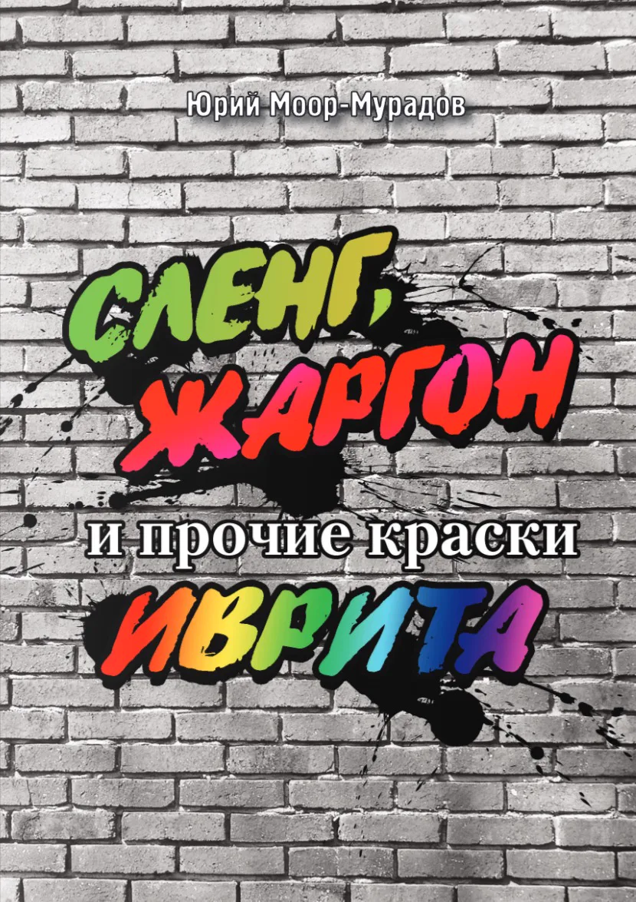

Статья · Хайфаинфо · 14 мая 2013
Все оттенки человеческой глупости
Юрий Моор-Мурадов
Уважаемые читатели, вы уже народ поднаторевший, много лет в Израиле, и пришло время сказать вам правду об иврите. В нем наряду с красивыми, изящными, полными смысла и мудрости словами и выражениями есть и такие, которыми ни один народ гордиться не станет, но которые есть во всех языках и наречиях. То есть, в нем немало презрительных, уничижительных, порой оскорбительных обращений, прозвищ, характеристик. С другой стороны, есть не меньше обращений ласковых, хвалебных. О них мы сегодня и поговорим в рамках знакомства с ивристким сленгом.
Какое самое популярное слово вырывается у нас при чьем-нибудь глупом поступке? Правильно, «дурак». Словарь услужливо переводит: «типеш«. Но все не так просто. В иврите слово «типеш» звучит несколько ласково, снисходительно, типа «глупыш». И мало кто в сердцах обзовет так человека, совершившего глупый, поступок. Скорее услышишь «Метумтам!» («тупой»).
В главе, посвященной арабскому сленгу, я приводил другой, более обидный аналог русского «дурака» - «аhбал» (ударение на первом слоге). А вообще словарь сленга настолько богат, что может выразить все оттенки человеческой глупости, ограниченности, тупости.
Могут вполне «по-русски» бросить глупому человеку «Хамор!» («Осел»). Почему - по-русски? Дело в том, что в еврейской традиции это животное отрицательных коннотаций не вызывает. В Торе праотец Яаков одобрительно называет своего сына Исасхара «хамор гАрем» - «ширококостный осел», имея в виду его упорство и трудолюбие. Видимо, под влиянием русского языка в современном иврите «хамор» звучит как оскорбление. Люди, имеющие дело с этими замечательными животными, вряд ли согласятся, что они глупые.
«ТЕмбель» (вариант - «тАмбель») - тоже дурак. Певец и композитор Аркадий Духин поет на иврите не знаю уже какую именно песню В. Высоцкого; перевел ее Ионатан Гефен, который выбрал заголовком для своего варианта текста слово «Тембель«.
«ХАса» - овощ семейства салата, но в определенном контексте означает «дурак», как и другой овощ - «крув«; обычно говорят «рош крув» - кочан. И в русской традиции принято голову сравнивать с капустой, вспомните Маяковского: «И не повернув головы кочан…»
Злые на язык люди разбрасываются обидными характеристиками такого рода: «ДифЕкт» («дефективный»), «мефагер» («отсталый в развитии»), «дафУк» («стукнутый»), «дислект«, «мутация«, «неандерталь«, «сенИли» - все эти экспрессивные термины позволяют точно отразить весь спектр той или иной степени умственной отсталости - причем чаще именно у того, кто этими характеристиками разбрасывается; намек достаточно толстый, чтобы вы поняли, что я не одобряю употребление таких слов?
«Рош меруба» («квадратная голова») - человек, не способный мыслить нестандартно, скучный, без воображения.
Близко к дуракам на социальной лесенке стоят люди простые, незатейливые, простодушные, которых называют «Амха» («простой народ»). Примитивных израильтян называют «индиани ям-тихони» («средиземноморский индеец»). Другое их название - «мохрей а-хамуцим» («торговцы солениями») - простолюдины, малообразованные, грубые, невежественные люди. Человека несовременного, отставшего от моды, от новейших веяний называют «антИка» («древний»).
Есть особое слово и для того, кто совершает глупые поступки по наивности: «ЙОрам«, «лопух». Собственно «Йорам» - обычное имя; имя собственное становится характеристикой во многих языках. В русском языке приобрела такой статус даже целая фамилия - «Сидоров», хотя я знаю вполне заслуженных людей с такой фамилией. Помнится, группа Сидоровых в 1970-х выразила публичное возмущение тем, что их фамилию сатирики затаскали для обозначения своих простоватых героев. А в Израиле известный певец Гаон требует называть его только полным именем «Йеhорам», а не сокращенным «Йорам». Если не хотите зря задеть замечательного певца, можно лопуха назвать «лАф-лаф«.
Те, кто в гневе несдержанны и раздают направо и налево ругательства, имеют в своем распоряжении набор перлов, самый распространенный из которых - «бен зонА» («сын женщины предосудительной профессии»); можно перевести и мягче - «сукин сын».
Как в русском вместо слова «б…» с мягким знаком в конце некоторые щепетильные люди произносят «блин», так и на иврите люди интеллигентные вместо «бен зона» говорят «бен-йона» («сын голубки»). Это нечто вроде знаменитого шукшинского «Чудак на букву «м».
Если это кажется недостаточно сильным, то в полном противоречии с человеческой физиологией аттестуют своего врага «Бен элеф зонот!» («Сын тысячи женщин предосудительной профессии».
В раже кричат оппоненту: «Ата эфес!» («Ты ноль, никто»). «Йа микроб» - бросают презрительно. «Зевель» («мусор»), «антипАт«.
Нижеследующие обидные прозвища и характеристики дают всем без различия расы, цвета кожи и волос и общественного положения: «халаклАк» («скользкая личность»), «загзегАн» («виляет»); «дохЕ» (неприятный тип, отталкивающая личность, человек, вызывающий брезгливость, отвращение); «харман» («сладострастный»); мы с вами одинаково понимаем это русское слово? Это тот, у кого избыточное количество не сахара в крови, а гормонов. Сексуально озабоченный. Таких еще называют «рош кахоль» («голубая голова»).
«ХатрАн» - интриган, «муштан» - мелкая, никчемная личность, «шафан» («заяц», читай - «трус»; «иштафен» - «струсил»), «тахман» - «коварный», «саhарури» (от «саhар» - «луна») - лунатик, не от мира сего, придерживающийся крайних взглядов, «субароид» - лишенный собственного мнения, текущий по течению, со всеми (от «субару» - некогда самой популярной в Израиле марки машин, тот, кто ее покупает, не способен на самостоятельное решение), «смартут» - «бесхребетная личность, тряпка»; «кУку» («свихнутый»), «немушА» («посредственность), «клюмник» («ничтожество»).
На иврите «обзывался» будет «кара бе-шемот» («называл разными именами»); это калька с английского. Шимон Перес однажды с трибуны упрекал своего соратника по партии Авода Ицхака Рабина: «Ани каръати отха бе-шемот?!» Дело в том, что Рабин назвал Переса «хатран бильти ниъа» («неутомимый интриган»), причем - в разгар предвыборной кампании, чем сильно навредил своей же партии. А потом все время распускал слухи, что Перес под него копает. Однажды Перес не выдержал и вот так «лягнул» в ответ.
Очень просто создать ругательное обращение, используя слово «хатихА» («кусок»). Берете его смихутную форму «хатихат-» - и приставляете бранное слово; теперь оно звучит еще обиднее; можно и не бранное, которые от одного только такого предварения становятся ругательными. «Хатихат зевель«, «хатихат хара«, «хатихат ганав«, «хатихат шотер«, «хатихат купаит«, «хатихат метумтемет«.
Почему «хатихат метумтемет» обиднее, чем просто «метумтемет«? Науке не известно. Вот и в русском: полудурок - это вроде бы вдвое меньше, чем дурак, но почему-то вдвое обиднее.
Прозвища могут быть и не обидными. К примеру: «Тефлон» - известный человек, которого не пачкает критика (от него отлетает, как от тефлонового покрытия сковородки). Типичный пример - Шимон Перес. «Хохмолог» («умник»), «хнун» («ботаник, очкарик, зубрила»), «бальян» (любитель погулять, завсегдатай ночных клубов).
Некоторые полагают, что нестандартная сексуальная ориентация - это плохо, и обзывают своих оппонентов «hомо» - причем необязательно, чтобы тот, кого так назвали, был гомосексуалистом - просто так обозвавший выражает свое презрение.
Зато «хевреман» - это свойский парень; «хатих» - «красавчик», «ашаф» - ас в своем деле, кудесник. «Ашаф ба-ниhуль масса у-матан» - мастер в деле ведения переговоров.
«Кавбой» («ковбой»), «калибер» («калибр»), «тотах» («пушка») - все это аттестации мужчины высокого класса, важного человека. На последнем съезде партии Ликуд Сарит Хадад пела, обращаясь к ее лидеру и премьер-министру Биньямину Нетаниягу: «Ата тотах!» Как видим, не только в СССР певцы пели «Товарищ генеральный секретарь!»
Такое же одобрительное имеет и прозвище «патиш» («молоток»); здесь я подозреваю, что это калька с русского, где одобрительное «молоток» появилось просто из-за созвучия со словом «молодец».
Разбрасываясь обидными прозвищами, не делают снисхождения и прекрасному полу. «ПустЕма» - глупая, пустая, бестолковая женщина. «БатАта» - то же самое, плюс еще и непривлекательная. «Шфанфана» («зайчонок») - хорошенькая, пустая, легкого поведения девушка, работающая в ночном клубе. Видели плейбойных полуодетых девиц с заячьими ушками? Это про них. «Меацбенет» - женщина, вызывающая раздражение своим поведением, своей глупостью. Ироничное «шхординит» - это брюнетка, перекрашенная в блондинку. Относятся с тем же неуважением, как к перекисной блондинке на нашей прежней родине.
Женщины могут не только раздражать, но и вызывать восхищение. «Пцацат мин» - «секс бомба». Можно и коротко: «пцаца» - классная девка. «Хатиха» («красивая»), «ШавА» («стОящая») - это комплименты в устах истинных ценителей женской красоты.
И дамы нередко раздают комплименты кавалерам: «Ата (hу) джентльмен» - «Ты (он) джентльмен». Только следует учесть, что в иврите это слово характеризует не происхождение и не социальное положение; оно в их устах означает «галантный». Ваш покорный слуга часто слышит этот комплимент от израильтянок - потому что я всегда пропускаю дам вперед, открываю перед ними дверь, встаю, когда они входят в комнату и проч. Правда, недавно одна молодая женщина, которую я попытался пропустить перед собой в комнату, легонько подтолкнула меня к двери, бросив при этом: «Аль тиhйе руси» - «Не веди себя как русский», (которые, как показывает ее практика, намного воспитанней ее знакомых-сабр).
И тут, оттолкнувшись от слова «сабра», мы смело можем перебросить мостик к следующей теме. Особенность израильского общества в том, что оно «лоскутное», «многонациональное» (если можно называть «нациями» евреев разной диаспоры), многоплеменное. Оно все состоит из секторов.
Вышеупомянутое «сабра» означает: «еврей - уроженец Израиля». Только произносят его «цАбар» («кактус»). Евреев - выходцев из восточных стран называют идишским словом «шварце» («черный») и «чахчахим» (передразнивание выговора выходцев из Марокко). Восточный люд не остается в долгу и называет ашкеназов (выходцев из Европы) презрительно «ашкентузи«, «вузвуз«.
Сейчас из-за проводимой прессой воспитательной работы, общего роста уровня культуры и даже нескольких исков в суды этими прозвищами пользуются редко, но знать их не помешает. Тех же выходцев из Марокко долго называли «Марокко-сакин» («марокканец с ножом»). Вот еще «этнические» ярлыки: «романи-ганав» («румын - воришка»), «ираки-пижама» (видимо, выходцы из Ирака настолько полюбили в свое время эту домашнюю одежду, что выходили в ней из дому). «Еке-поц» - кличка выходцев из Германии и ее окрестностей. «Ана-кУрди» - дурачок, такая же анекдотическая личность, как «чукча» в России.
Арабов вежливо называют «Бней додИм» («кузены» - по праотцу Аврааму), а невежливо - «арабУш«.
А как обращаться к людям, чьего имени ты не знаешь? Помните, перед самой перестройкой «Литературка» затеяла дискуссию о том, что в богатейшем русском языке не хватает нормального обращения к людям - поскольку повсеместное «товарищ», во-первых, попахивает политикой, а во-вторых не имеет женского рода. Участники дискуссии позавидовали французам с их «мадам», «мсье», «мадемуазель», англичанам с их «мистер», «мисс» и «миссис». Некоторые «почвенники» предлагали вернуть в лексикон «сударь», «сударыня», «барышня» - но сатирики и обличители за предыдущие десятилетия настолько дезавуировали эти обращения, что, видимо, не приживается. До сих пор «господин» звучит несколько иронично.
В иврите, несмотря на полусоциалистическое прошлое, принято обращаться к незнакомым «адОн, гвЕрет» («господин, госпожа»). Ораторы на собраниях, депутаты в Кнессете, продавцы на рынке обращаются: «Работай у-гвиротай!» («Дамы и господа!»).
У «гверет» есть вариант «гивЕрет«; это не полные синонимы, «гиверет» отличается от «гверет«, как «дорогая» от «дорогуша». Женщина солидной комплекции заслоняет проход и сама не сообразит, что мешает. Ее вежливо просят: «Гиверет, дайте пройти«. Разборчивая покупательница никак не выберет, ее торопят: «Гиверет, что вам завернуть?«
Это все официальный уровень. А как по простецки?
Можно - «хавер» («товарищ, друг»), «хабУб» (любезный»), «ахИ» («брат»), «дод» («дядя»), «гЕвер» («мужчина»),»Абале» (папаша - к седовласому человеку), «джинджи» («рыжий» - это к парню, даже если он черноволосый), и «балабайт» («хозяин») - к любому возрасту.
Есть сленговые обращения, заимствованные из арабского: «абУй» («папаша»), «ахУй» («братан»). Следующий пример вам покажется нелогичным: «Ах шелО» («брат его») - так тоже обращаются к людям.
Очень распространено «мОтек» («сладкий, сладкая») - но в последнее время люди стали обижаться на такое обращение. Считают обидным. Упомянутая Сарит Хадад, отражая эти настроения, поет: «Аль тикрА ли «мотек«!» («Не зови меня «мотек»).
С панибратским обращением к незнакомым женщинам здесь напряженка. Пытаются сказать «ахоти» («сестра«). Но это неоднозначно. Видимо, все еще сказывается некоторая консервативность израильского общества, в котором не принято обращаться на улице к дамам, которым вас официально еще не представили.
Особая статья - ласковые обращения к знакомым, любимым, любимцам и любимчикам. «мАми» («мамочка») - так называют друг друга супруги, так мамы называют своих чад. Вариант - «мАмуш» - типа «лапочка», солнышко», «золотко». Жены и мужья, сюсюкая, обращаются друг к другу: «мУшмуш». Как называл инженер Брунс свою жену в «12 стульях»? «Мусик»? Вот это самое.
Впервые опубликовано: Хайфаинфо, 14 мая 2013. Оригинал публикации ↗

Колонка вошла в книгуСленг, жаргон и прочие краски ивритаЗанимательный иврит 4О книге →